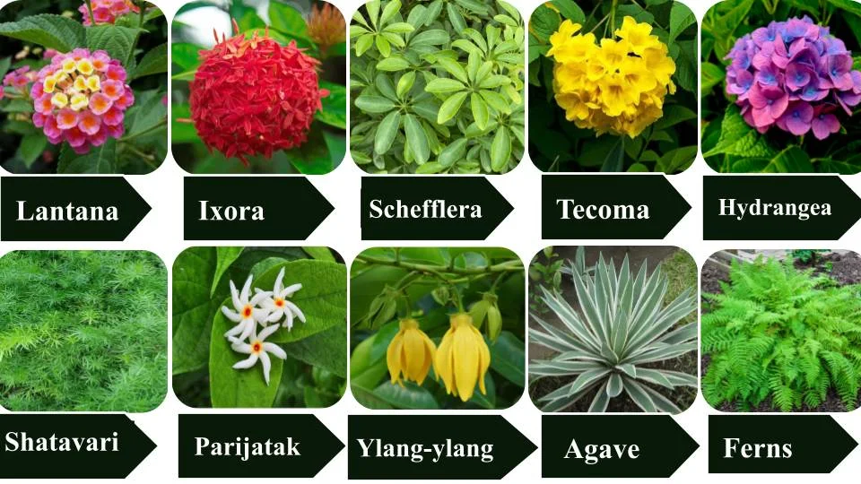

Shrubs
A shrub or bush is a small to medium-sized perennial woody plant. Unlike herbaceous plants, shrubs have
persistent woody stems above the ground. Shrubs can be either deciduous or evergreen. They are distinguished
from trees by their multiple stems and shorter height, less than 6–10 m (20–33 ft) tall.[1][2] Small shrubs,
less than 2 metres (6.6 feet) tall are sometimes termed as subshrubs. Many botanical groups have species that
are shrubs, and others that are trees and herbaceous plants instead.
Some define a shrub as less than 6 m (20 ft) and a tree as over 6 m. Others use 10 m (33 ft) as the cutoff point
for classification.[2] Many trees do not reach this mature height because of hostile, less than ideal growing
conditions, and resemble shrub-sized plants. Others in such species have the potential to grow taller in ideal
conditions. For longevity, most shrubs are classified between perennials and trees. Some only last about five
years in good conditions. Others, usually larger and more woody, live beyond 70. On average, they die after
eight years.[3]
Characteristics of Shrubs
- Medium-sized plants (usually 1–3 meters tall)
- Woody, hard, and branching from the base
- Multiple stems (unlike trees which usually have one main trunk)
- Live for several years (longer than herbs)
- Densely branched, often close to the ground
- May be small or large, often thick and tough

| Uses of Shrubs |
| Decorative |
Rose, Bougainvillea |
| Medicinal |
Hibiscus, Henna |
| Raw Material |
Tea plant, Indigo |
| Natural Fencing |
Lantana, Bougainvillea |
| Wildlife Shelter |
Jasmine, Lantana |
Fun Facts About Shrubs
- Shrubs are in between herbs and trees — not too small, not too tall!
- Most shrubs have multiple stems, unlike trees that usually have just one trunk.
- Some shrubs flower all year round, like hibiscus and rose.
- Birds love shrubs — they use them for nesting and protection.
Go to Home page